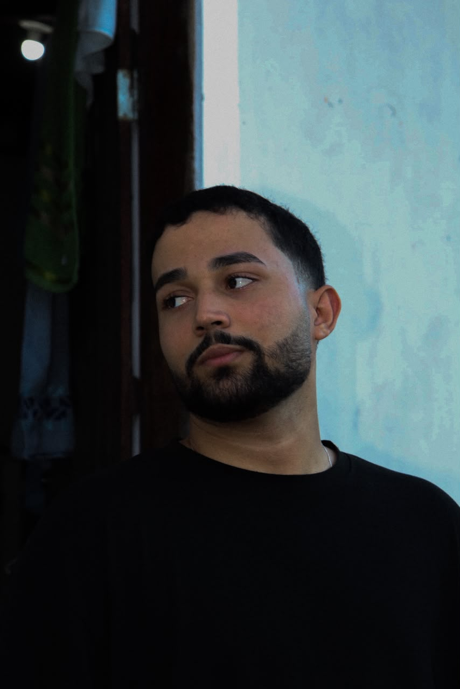

Sobre mim
Construindo minha base no desenvolvimento web
Olá, me chamo Caio Vinícius e atuo no desenvolvimento web, com foco na criação de interfaces modernas, responsivas e funcionais. Trabalho com HTML, CSS e JavaScript, aplicando boas práticas de estruturação, estilização e desenvolvimento para transformar ideias em experiências digitais eficientes. Meu portfólio reúne projetos desenvolvidos na prática, demonstrando minha capacidade de criar soluções visuais consistentes e funcionais, com atenção aos detalhes, usabilidade, responsividade e qualidade do código.
Aqui, você encontrará projetos desenvolvidos com foco em qualidade, organização e aplicação prática de soluções para a web. Cada trabalho reflete a utilização de conceitos modernos de desenvolvimento, priorizando funcionalidade, responsividade e uma experiência visual consistente. Busco constante evolução profissional, acompanhando novas tecnologias, boas práticas e tendências do mercado para aprimorar continuamente minhas habilidades. Este espaço foi criado para apresentar meus projetos, compartilhar minha atuação no desenvolvimento web e demonstrar meu compromisso com a criação de soluções eficientes e bem estruturadas.
Minha jornada até aqui
- HTML semântico — estruturação clara e acessível de páginas.
- CSS & layout responsivo — flexbox, grid e design mobile-first.
- Identidade visual — paletas, tipografia e componentes consistentes.
- Git & GitHub — versionamento e organização de projetos.